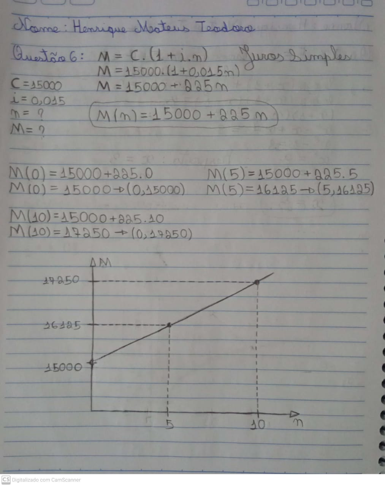
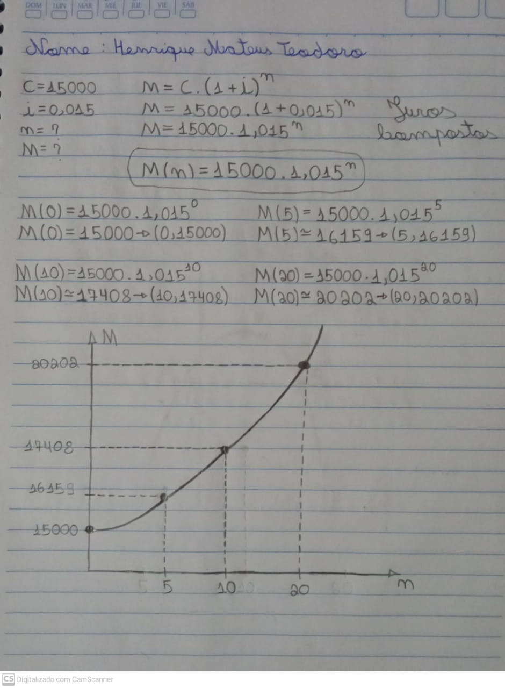

A matemática financeira é uma das áreas da matemática responsável por estudar fenômenos relacionados ao mundo financeiro, utilizando conceitos matemáticos aplicados à análise de dados.
Os problemas clássicos de matemática financeira são ligados a questão do valor do dinheiro no tempo e como isso é aplicado a empréstimos, investimentos e avaliação financeira de projetos.
Conceitos:
É o valor inicial de um empréstimo ou aplicação, sobre o qual irão incidir os juros.
Símbolo: C.
É o tempo de duração do empréstimo ou do investimento. Pode ser medido em dias, meses, trimestres, semestres, anos, etc.
Símbolo: n.
É o preço (em Reais) pago pelo aluguel, ou empréstimo, do dinheiro (do capital). É também o rendimento do dinheiro aplicado.
Símbolo: J.
É a taxa percentual ou unitária do rendimento do capital ou pagamento pelo uso do capital, numa unidade de tempo (ao dia, ao mês, ao ano,...).
Símbolo: i.
É o valor total a ser pago ou recebido com a finalidade de quitar um empréstimo. É o valor final de uma aplicação.
Símbolo: M.
No regime de capitalização simples, a taxa de juros incide sempre sobre o capital inicial, durante o período de capitalização.
Fórmulas:
Juros Simples e Funções Afim:
A rentabilidade do capital, em juros simples, tem crescimento linear, ou seja, a cada período de capitalização, o rendimento é o mesmo. Nesse sentido, podemos estabelecer uma relação entre o valor do Montante e o tempo de capitalização do dinheiro. Exemplo disponível em Exemplo de exercício realizado
* O gráfico é uma reta.
Quando uma soma está aplicada a juros compostos, os juros são calculados não apenas sobre o capital inicial, mas sobre este capital acrescido dos juros já vencidos.
Capitalização composta é aquela em que a taxa de juros incide sobre o principal acrescido dos juros acumulados até o período anterior (juros sobre juros). Neste regime de capitalização a taxa varia exponencialmente em função do tempo.
Cálculo do Montante:
É a soma do capital aplicado ou devido mais o valor dos juros correspondentes ao prazo da aplicação ou da dívida.
Fórmula: M = J + C
Dedução da Fórmula:
O cálculo exponencial está relacionado ao cálculo de juros compostos, sendo assim, para um capital C aplicado a uma taxa i por um período n temos a seguinte fórmula para o montante M:
Fórmula: M = C(1 + i)^n
Juros Compostos e Funções Exponenciais:
A rentabilidade do capital, em juros compostos, tem crescimento exponencial, ou seja, a cada período de capitalização, o rendimento é sempre maior que o anterior. Nesse sentido, podemos estabelecer uma relação entre o valor do Montante e o tempo de capitalização do dinheiro. Exemplo disponível em Exemplo de exercício realizado
* O gráfico é uma curva.
O estudo sobre Matemática Financeira é de extrema importância para nossa formação como alunos, afinal a mesma é utilizada em diversos fatores do cotidiano, assim, além de nos dar uma boa base para o ENEM ou vestibulares, serve também para a prevenção de golpes por pessoas maliciosas, sendo esse o principal motivo da escolha do tema.
Os mesmos procedimentos e métodos passados durante a aula online foram utilizados para a realização das atividades e exercícios. Sinto que tive mais dificuldades em relação aos Juros Compostos, talvez por serem um pouco mais complicados. Não foram muitas dúvidas, mas as presentes, foram resolvidas através da leitura dos materiais disponibilizados pela professora, que apresentavam diversos exemplos e aplicações.
Com relação ao meu empenho, dedicação e participação, acredito ter me saído relativamente bem. Apesar de não participar do atendimento dessa vez, consegui resolver minhas dúvidas adequadamente, e entreguei o trabalho sobre o conteúdo no prazo correto, o que considero algo bom. Mas apesar de não sentir muitas dificuldades, ainda preciso prestar mais atenção nos conteúdos, e principalmente durante a aula síncrona, onde algumas vezes deixo algo passar despercebido e isso acaba me prejudicando.
Um valor de R$ 15.000,00 foi aplicado a uma taxa de 1,5% ao mês. Estabeleça as funções matemáticas que descrevam a rentabilidade do dinheiro ao longo dos meses segundo o regime de capitalização simples e composta. Faça o gráfico de cada tipo de capitalização e analise as diferentes rentabilidades.
 